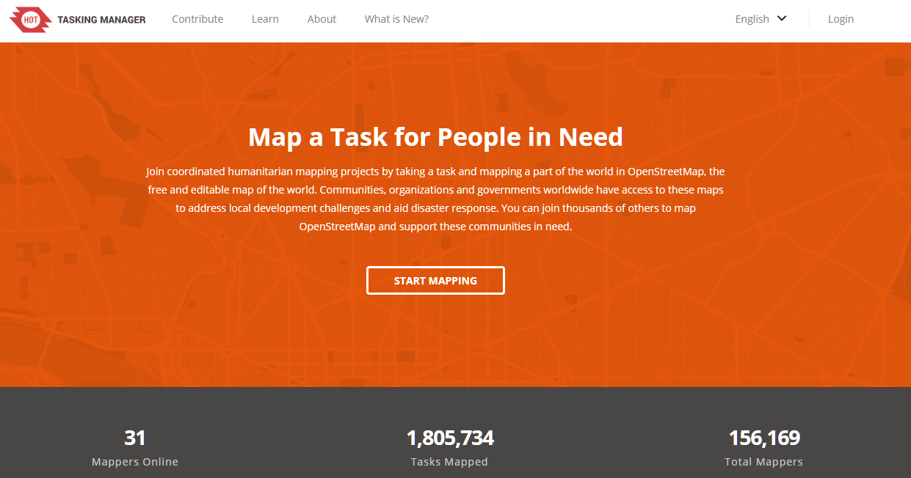
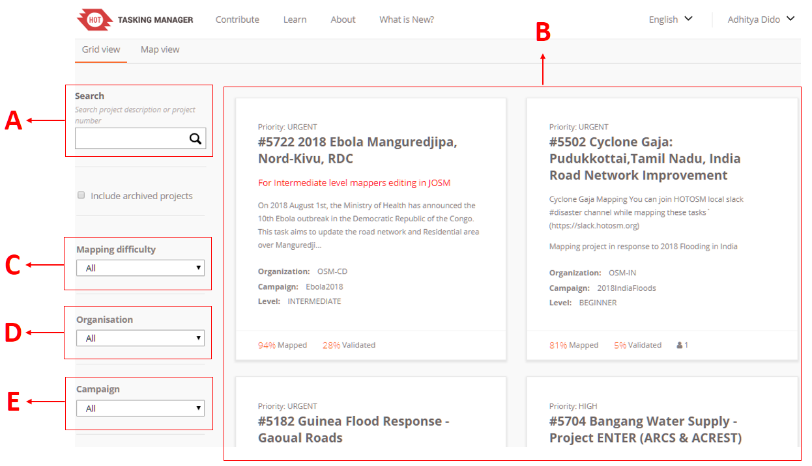
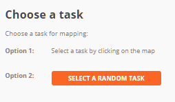
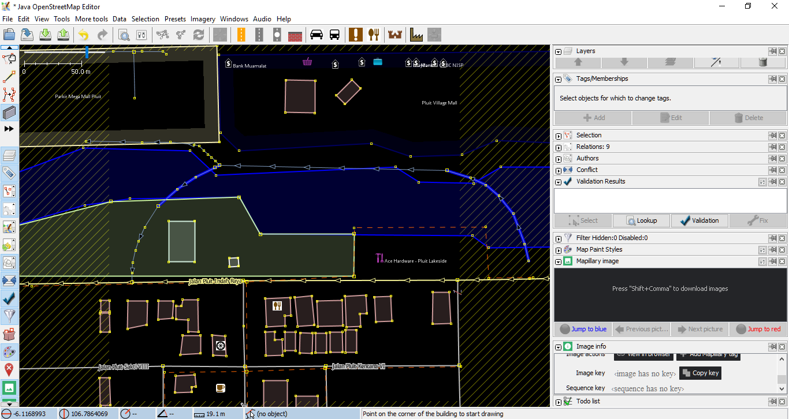
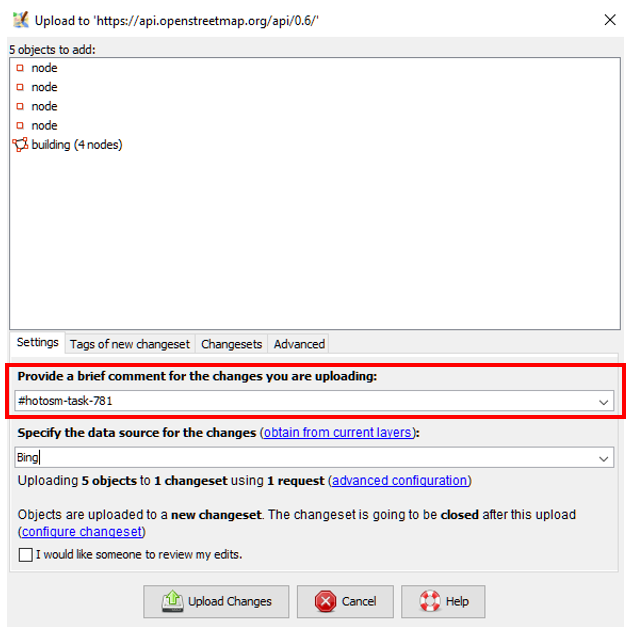
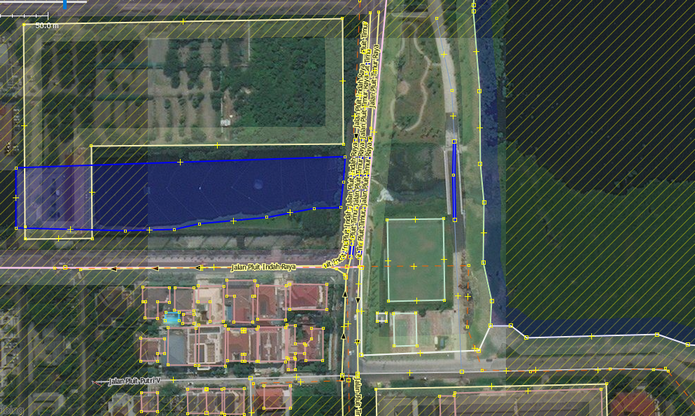
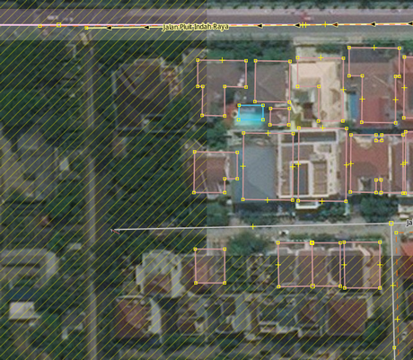

Penggunaan Tasking Manager
class="pdf-download-link"> Download page as PDFTujuan Pembelajaran:
- Menjalankan fungsi dari tasking manager dalam konteks pemetaan partisipatif
- Mengoperasikan cara menggunakan tasking manager untuk kegiatan pemetaan
OpenStreetMap sebagai sebuah alternatif untuk melakukan pemetaan secara bebas dan terbuka memungkinkan semua orang tanpa terkecuali untuk dapat melakukan pemetaan dimanapun dan kapanpun. Namun, bagaimana jika Anda ingin melakukan pemetaan secara serentak yang dilakukan oleh banyak orang? Tentunya Anda membutuhkan sebuah alat untuk dapat membagi pekerjaan pemetaan tersebut supaya bisa dikerjakan oleh banyak orang. Tasking manager memungkinkan Anda untuk melakukan hal itu. Dalam modul ini, Anda akan mempelajari lebih lanjut mengenai Tasking Manager dan bagaimana cara memetakan data OSM melalui Tasking Manager.
I. Apa itu Tasking Manager?
Definisi Tasking Manager
Tasking manager merupakan sebuah alat yang dibuat secara khusus untuk melakukan pemetaan secara kolaboratif dan partisipatif. Tasking manager memungkinkan Anda untuk melakukan pemetaan di suatu wilayah secara bersama-sama dengan pembagian wilayah yang berbeda. Fungsi Tasking manager adalah untuk membagi pekerjaan pemetaan ke dalam beberapa grid/kotak yang berbeda sehingga setiap orang dapat memilih grid/kotak untuk dikerjakan. Selain itu, Tasking manager juga dapat memudahkan Anda dalam memantau proses pengerjaan pemetaan. Anda dapat mengetahui wilayah mana yang masih butuh dipetakan, sedang dipetakan, dan wilayah mana yang sudah selesai dipetakan.
Bayangkan Anda ingin melakukan pemetaan pada suatu wilayah tertentu dimana Anda harus memetakan secara bersama-sama dengan 20 orang lainnya. Jika tidak ada pembagian tugas dan wilayah, maka akan ada kemungkinan beberapa orang memetakan di wilayah yang sama. Dengan adanya Tasking manager, hal seperti ini dapat dihindari dan pekerjaan pemetaan akan dapat diselesaikan secara lebih cepat dan efisien.
Contoh Penggunaan Tasking Manager
Tasking manager pernah digunakan sebagai bentuk respon ketika bencana Topan Haiyan terjadi di Filipina pada 8 November 2013. Pemetaan menggunakan tasking manager dilakukan di Kota Tacloban, salah satu kota yang terdampak sangat parah ketika bencana terjadi. Dalam kurun waktu 24 jam setelah dibuatnya proyek tasking manager, sebanyak 10.000 bangunan telah terpetakan atau sekitar 25% dari total jumlah bangunan yang ada di Kota Tacloban. Seluruh pemetaan ini dilakukan oleh 33 orang relawan.

Kondisi bangunan sebelum dan setelah dipetakan menggunakan Tasking Manager
Tasking manager juga digunakan di Indonesia untuk respon ketika bencana terjadi. Salah satu contohnya adalah ketika bencana gempa dan tsunami terjadi di Selat Sunda pada Desember 2018. Dalam kurun waktu 1 bulan, seluruh daerah terdampak sudah selesai dipetakan oleh sekitar 60 orang relawan.

Tasking Manager yang dibuat sebagai respon bencana gempa dan tsunami di Selat Sunda
II. Memulai Tasking Manager
Anda dapat mengakses halaman tasking manager di alamat https://tasks.hotosm.org/. Ketika Anda membuka halaman tersebut, akan muncul tampilan seperti berikut:

Halaman utama Tasking Manager
Pada halaman utama, Anda dapat melihat beberapa menu yang bisa Anda pilih. Untuk mengganti bahasa yang ingin ditampilkan Anda dapat memilih tombol tanda panah di sebelah kiri tombol Login pada kanan atas layar. Anda juga bisa mempelajari lebih lanjut mengenai tutorial penggunaan tasking manager pada menu Learn di bagian atas layar.

Tombol untuk mengganti bahasa di sebelah kanan dan tombol Learn di sebelah kiri
Sebelum dapat memetakan menggunakan Tasking Manager, ada beberapa hal yang perlu Anda perhatikan, seperti:
Login/Masuk ke dalam Tasking Manager
Sebelum Anda dapat melakukan memetakan, Anda harus melakukan login atau masuk dengan menggunakan akun OpenStreetMap yang Anda miliki. Silakan Anda pilih menu Login yang berada di sebelah kanan atas layar kemudian masukkan akun OpenStreetMap yang telah Anda miliki. Pada pilihan Authorize access to your account silakan Anda centang pilihan read your user preferences kemudian pilih Grant Access. Untuk lebih jelasnya, silakan Anda lihat gambar berikut:

Pilihan untuk mengizinkan otorisasi pada akun Anda
Setelah Anda login maka Anda akan diarahkan kembali pada halaman Tasking Manager. Anda dapat melihat nama akun OpenStreetMap di bagian kanan atas halaman yang menandakan bahwa Anda telah berhasil melakukan login. Untuk memulai memetakan, silakan pilih tombol Start Mapping atau tombol Contribute yang terletak di sebelah kiri atas layar.

Tombol Contribute dan Start Mapping pada halaman Tasking Manager
Mencari Proyek Tasking Manager di Kolom Pencarian
Setelah Anda menekan tombol Start Mapping atau Contribute akan muncul halaman Contribute. Di halaman ini Anda dapat memilih tampilan Grid View dan Map View. Di dalam tampilan Grid View ada beberapa hal yang perlu Anda perhatikan, seperti:

Beberapa pengaturan yang dapat dilakukan pada tampilan Grid View
Search (Kotak Pencarian)
Pada bagian ini, Anda dapat melakukan pencarian proyek tasking manager. Silakan Anda ketik kata kunci yang diinginkan seperti nama kecamatan, kabupaten, provinsi, atau nama kegiatan yang menjadi judul proyek yang telah dibuat.
Proyek Tasking
Di bagian ini, Anda dapat melihat berbagai proyek tasking manager yang telah dibuat sebelumnya oleh para kontributor.
Mapping Difficulty
Pada bagian ini, Anda dapat memilih tingkat kesulitan dari proyek tasking manager yang ingin Anda cari. Tingkat kesulitan yang dapat dipilih dibagi menjadi 3 kategori, beginner, intermediate, dan advance. Jika Anda masih pemula silakan Anda pilih beginner, jika Anda sudah mahir memetakan silakan Anda pilih Intermediate, dan jika Anda sudah ahli dalam memetakan maka Anda dapat memilih Advance. Jika Anda ingin melihat seluruh tasking pilih All
Organization
Anda dapat memilih proyek tasking manager berdasarkan organisasi pembuat proyek tersebut seperti American Red Cross, Missing Maps, HOTOSM, dan HOT Indonesia.
Campaign Anda juga dapat memilih proyek tasking manager berdasarkan kegiatan tertentu. Sebagai contoh, Anda dapat memilih proyek tasking manager untuk kegiatan Malaria Elimination.
Anda dapat mengubah tampilan dari Grid View menjadi Map View. Pada tampilan Grid View, Anda akan melihat daftar proyek tasking manager dalam bentuk grid atau kotak. Jika Anda memilih tampilan Map View, tampilan utama yang akan Anda lihat adalah tampilan peta dunia dengan banyak bulatan kecil berwarna biru di atasnya.

Tombol untuk mengubah tampilan Grid View atau Map View
Jika Anda telah mengubah tampilan Anda menjadi Map View, akan muncul halaman seperti berikut:

Tampilan Map View pada Tasking Manager
Berbeda dengan tampilan Grid View, tampilan Map View akan memperlihatkan tampilan peta dunia dengan banyak bulatan biru. Anda dapat menggunakan tombol dengan tanda plus dan minus yang ada di sebelah kiri atas bidang peta untuk memperbesar dan memperkecil tampilan peta. Ketika tampilan peta diperbesar, maka akan muncul berbagai proyek tasking manager yang ada di berbagai tempat ditandai dengan adanya titik-titik berwarna. Masing-masing warna tersebut mewakili tingkat prioritas proyek tasking mulai dari urgent hingga low.
Jika Anda ingin mulai melakukan pencarian, maka Anda dapat mengubah tampilan menjadi Grid View. Ubah kembali tampilan Tasking Manager Anda menjadi tampilan Grid View. Untuk dapat mencari proyek tasking, silakan Anda arahkan kursor Anda pada kotak pencarian. Pada contoh kali ini kita akan mencari proyek tasking manager dengan kata kunci ‘Penjaringan’ kemudian tekan Enter. Untuk parameter lain seperti mapping difficulty, organization, dan campaign tidak perlu diubah.

Hasil pencarian proyek tasking manager dengan kata pencarian ‘penjaringan’
Tasking Manager akan menampilkan proyek dengan kata kunci ‘Penjaringan’. Silakan Anda pilih proyek tasking yang ada di sebelah kanan dengan judul ‘#781 - INSIST II (Integrated Services for Infrastructure and Sanitation Technology) II - Kelurahan Penjaringan’.
Mengenal Tampilan Tasking Manager
Ketika Anda telah memilih satu proyek tasking, maka akan muncul tampilan sebagai berikut:
Tasking manager #781 INSIST - Kelurahan Penjaringan
Tampilan ini menunjukkan deskripsi proyek tasking manager yang sedang kita buka. Pada bagian deskripsi, Anda dapat membaca latar belakang proyek pemetaan infrastruktur dan sanitasi di Penjaringan. Di bagian bawah kita dapat melihat informasi lebih detail mengenai proyek ini, mulai dari tingkat prioritas, organisasi pembuat, nama pembuat proyek, tingkat kesulitan, hingga objek apa yang harus dipetakan. Jika Anda ingin membuat proyek tasking manager Anda sendiri, Anda dapat membacanya di modul Membuat dan Mengelola Tasking Manager.

Tampilan proyek tasking manager
Di bagian bawah deskripsi Anda dapat melihat tampilan peta di sebelah kanan dan beberapa informasi yang dapat Anda lihat di sebelah kiri. Jika Anda perhatikan pada bidang peta, terdapat beberapa kotak dengan warna yang berbeda. Warna tersebut mewakili informasi:

Ready (Siap)
Menunjukkan kotak tersebut dapat Anda kerjakanMapped (Dipetakan)
Kotak berwarna kuning menunjukkan bahwa kotak tersebut telah selesai dipetakanBad Imagery (Citra Satelit Buruk)
Kotak berwarna abu-abu kehitaman ditandai sebagai daerah dengan citra satelit yang burukValidated (Tervalidasi)
Kotak berwarna hijau menunjukkan bahwa kotak tersebut telah tervalidasiInvalidated (Tidak Tervalidasi)
Kotak berwarna merah menunjukkan bahwa kotak tersebut masih perlu diperiksa ulang sebelum dilakukan validasi kembaliLocked (Terkunci)
Kotak berwarna abu-abu menunjukkan bahwa kotak tersebut telah dipilih oleh pengguna lainLocked by you (Dikunci oleh Anda)
Kotak berwarna dengan garis berwarna biru tua menunjukkan kotak yang sedang Anda pilih dan kerjakan
- Memulai Berkontribusi di Proyek Tasking Manager
Anda dapat melakukan dua jenis kontribusi pada proyek tasking manager, yaitu melakukan digitasi objek dan melakukan validasi data yang sudah dipetakan. Untuk mulai berkontribusi dan melakukan pemetaan silakan ikuti langkah-langkah berikut:
Pilih tombol Map.

Selanjutnya, tugas Anda adalah memilih grid/kotak proyek tasking manager mana yang akan Anda kerjakan dengan cara memilih langsung grid/kotak pada proyek tasking manager atau Anda juga dapat memilih kotak secara acak dengan menekan tombol Select a Random Task. 
Anda juga dapat mengganti basemap atau peta dasar agar area pemetaan di citra satelit yang terkena awan atau hutan dapat terlihat, sehingga tidak perlu dipilih.

Jika Anda menemukan grid/kotak yang tertutup awan, silakan Anda pilih tombol Mark as Bad Imagery. Jika Anda melihat bahwa area pemetaan tersebut hanya terdapat hutan, silakan Anda pilih Mark as Completely Mapped.

Jika sudah terpilih kotak yang diinginkan, silakan pilih tombol Start Mapping.

Silakan Anda pilih JOSM sebagai editor yang akan digunakan untuk memetakan, kemudian pilih tombol Start Editor. Pastikan bahwa software JOSM Anda telah dibuka sebelumnya.
Secara otomatis tasking manager akan mengunduh data ke dalam JOSM. Anda dapat langsung memetakan menggunakan JOSM dan citra satelit yang telah disesuaikan dengan petunjuk yang ada di halaman proyek tasking. Jika Anda ingin mengetahui bagaimana cara memetakan dengan menggunakan JOSM, silakan Anda buka kembali modul Menggunakan JOSM. Petakan seluruh objek yang ada di grid/kotak tersebut.

Data OSM yang telah berhasil di-download melalui tasking manager
Setelah selesai, jangan lupa untuk meng-upload hasil pemetaan Anda secara berkala. Hal ini bertujuan untuk mencegah terlalu banyaknya beban data yang akan di-upload. Ketika Anda ingin meng-upload, jangan lupa untuk menambahkan komentar. Jika Anda perhatikan pada kolom komentar, Anda akan melihat komentar bawaan yang sama dengan penomeran proyek tasking manager tersebut. Silakan Anda tambahkan komentar Anda di belakang komentar tasking manager tersebut.

Kolom komentar pada saat upload data dari JOSM
Setelah Anda selesai melakukan pemetaan dan telah mengunggah data ke dalam server OpenStreetMap, silakan Anda kembali pada halaman tasking manager. Anda dapat memberikan komentar mengenai perubahan yang telah dikerjakan. Jika telah selesai memetakan seluruh objek di dalam proyek tasking manager, pilih tombol Mark as Completely Mapped. Namun, jika masih ada beberapa objek yang belum terpetakan, Anda dapat memilih tombol Stop Mapping untuk berhenti melakukan pemetaan dan dapat melanjutkan pemetaan nanti atau membiarkan kontributor lain untuk melengkapi dan memetakan objek tersebut.

Menambahkan komentar pada grid/kotak tasking manager yang telah dipetakan
Hal-hal yang Harus Diperhatikan saat Sudah Memilih Area di Proyek Tasking
Ada beberapa hal yang harus Anda perhatikan jika Anda telah memilih proyek dalam Tasking Manager.
Batas waktu pengerjaan maksimal 120 menit
Ketika Anda telah memilih satu kotak untuk dikerjakan, kotak tersebut akan menjadi milik Anda dalam jangka waktu 120 menit atau 2 jam. Pastikan Anda tidak terlalu lama mengerjakan dan segera lakukan upload data secara berkala.

Pemberitahuan batas waktu pengerjaan tasking manager
Jangan lupa untuk membuka kembali kotak yang telah Anda pilih
Jika Anda telah selesai memetakan, jangan lupa gunakan tombol Stop Mapping jika kotak belum selesai dipetakan. Tombol Mark as Completely Mapped digunakan jika kotak yang Anda pilih telah betul-betul selesai Anda petakan dan sudah tidak ada objek apapun yang dapat Anda petakan.

Tombol Stop Mapping digunakan jika grid/kotak Anda belum selesai dipetakan
Jangan memetakan objek di luar area tasking terpilh

Area yang terarsir tidak boleh Anda petakan
Ketika grid/kotak tasking manager yang Anda pilih telah terbuka di dalam JOSM, terdapat area yang terarsir dan area tidak terarsir. Maksud dari area tidak terarsir menandakan bahwa area tersebut merupakan area pemetaan Anda, sementara area yang terarsir merupakan area yang tidak boleh Anda petakan. Hal ini dimaksudkan supaya tidak terjadi konflik antara pengguna tasking manager.
Perlakuan khusus untuk objek yang berada di perbatasan antar kotak
Seringkali ketika memetakan menggunakan tasking manager, Anda menemukan objek-objek yang terletak di perbatasan antar dua grid/kotak tasking manager yang berbeda seperti contoh berikut:

Objek yang terletak di perbatasan grid/kotak tasking manager
Jika menemukan contoh objek seperti gambar di atas, silakan Anda petakan objek tersebut sedikit melewati batas grid/kotak tasking manager yang Anda pilih. Hal ini dilakukan terutama pada objek jalan untuk memberi panduan bagi kontributor lain yang memetakan di proyek tasking manager berbeda dan bersebelahan dengan area Anda.
RINGKASAN
Saat ini Anda telah berhasil mempelajari definisi serta fungsi dari tasking manager. Tasking manager merupakan sebuah alat yang sangat berguna untuk melakukan pemetaan secara kolaboratif dan partisipatif. Ketika suatu wilayah perlu untuk dipetakan secara masif dan perlu dilakukan secara cepat, Tasking manager menjadi alat yang sangat berguna untuk digunakan. Anda juga telah mempelajari bagaimana cara menggunakan Tasking Manager untuk kegiatan pemetaan. Diharapkan dengan menggunakan Tasking Manager pekerjaan pemetaan yang Anda lakukan dapat diselesaikan dengan lebih cepat dan dapat diorganisir dengan baik.